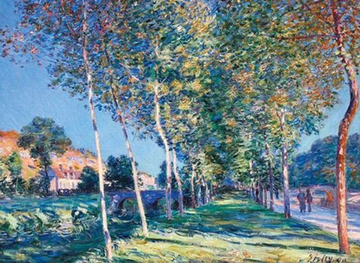
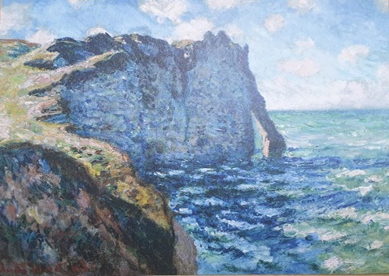

건축이나 미술이나 먼저 알아야 할 것은 ‘아름다움은 무엇인가’ 라는 질문부터 해야 한다. 철학에서 아름다움을 논하자면 그 아름다움을 사람의 단어로 사람에게 설명하고자 부지런히 노력하지만, 결국 하는 철학자라고 부르는 사람들의 논리는 귀결되어 있다.
결국 하나님께서 주신 눈과 귀를 통해서, 작은 인간들이 자신의 경험(태어난 후 터득한)을 통해서 아름다운 것들의 느낄 때 우리는 그 것을 ‘예쁘다’라고 말하지 않고, 아름답다라고 한다. 그것이 인간의 본성이다.
“아름다움이란 단어의 원리가 뭔데? 난 아름다움에 대해서 배우지 않았는데, 그렇지만 아름다운 것은 아름답다고 느껴지는데? “
왜 그럴까 생각해보면, 하나님이 만드셨고, 보기에 심히 좋았더라 하셨고, 우리는 하나님 형상대로 만들어졌으니까 당연한 결과가 아닐까?
한국어 사전에서는 아래와 같이 아름다움을 정의한다.
아름답다 ( 아름다움 )
1.
형용사 보이는 대상이나 음향, 목소리 따위가 균형과 조화를 이루어 눈과 귀에 즐거움과 만족을 줄 만하다.
• 2.
형용사 하는 일이나 마음씨 따위가 훌륭하고 갸륵한 데가 있다.
자신이 만든 모든 것을 보시니 보시기에 심히 좋았더라(창1:31)

그분께서는 그 자신이 만드신 것을 보고(인식하시고), 좋았더라 하시고, 인간과 그의 짝을 만드시고, 보시기 심히 좋았더라(인지하셨다 다라고 볼 수 있다) 라고 하셨다. 그리고 하나님은 우리 인간을 만드시면서, 하나님 곧 하나님 형상대로 지으신 인간에게 관리 하게 시키셨다(창 1:28) 그러므로 우리도 보고 느낄 수 있는 사람으로 태어난 것이다.
하나님은 자신의 기쁨을 위해 우리를 창조하셨고, 이에 우리는 그분의 피조물로서 그분을 알아가는 것을 우리의 삶에 있어서 즐거움을 느낄 수 있고, 하나님께서 만드신 것을 보고 느낄 수 있게 만들어진 인간이고, 심히 좋아할 수 있는 하나님께서 창조하신 사람이다.
그 분이 심히 좋았다고 말씀하셨으니, 우리에게는 광하고, 경이롭고, 아름다울 것이다.
인간이 아름답다고 느낄 때 에는 자세히 생각해보면 ‘하나님께서 만드셨거나 하나님에게 조금 더 다가간 것’들을 보면 우리는 아름답다라고 하는 것을 느낄 수 있다. 자연에서는 빛이 투영되어 새벽녘에 일어나는 빛의 아름다움을, 저녁에는 노을이, 밤하늘에는 빛나는 별들이, 또 압도적인 자연경관 앞에서 우리는 경이 롭고, 말로 형언할 수 없는 느낌을 받으면 그것을 아름답다라고 느낀다
“요한복음 13장 34-35절에 “새 계명을 너희에게 주노니 서로 사랑하라 내가 너희를 사랑한 것 같이 너희도 서로 사랑하라. 너희가 서로 사랑하면 이로써 모든 사람이 너희가 내 제자인 줄 알리라.“
"자신을 희생하여 남이나 다른 어떠한 것을 구하는 것, 아들 딸이 태어나는 순간, 그의 자식의 자식을 잉태한 순간, 함께 밤하늘을 바라본 순간, 자식들이 자신의 선물에 행복해 할 때의 순간, 아이들을 위해 일하신 어머니의 손등 등 ‘진정한 사랑’의 순간"도 아름다운 순간이지 않을까?
우리가 ‘아름다움’(자연경관, 노래, 음악, 사랑의 순간 등)을 배워 가는 것은 하나님께서 만들어주신 세상을 알아가는 과정과 비슷하지 않을까 생각한다.
저자는 하나님께서 아름다운 것을 만드신 것을 이해하고, 말씀을 통해서 우리가 살아가고 있는 죄 된 세상에서 어떻게 건축물과 미술품들이 현대에 오기까지 어떠한지, 바라보고, 이야기를 쓰려고 한다. 아름다움을 쫓다 결국, 지금 어디까지 오게 됐는지 저자와 함께 살펴보자. 매우 주관적이고 매우 편협할 수도 있다. 하지만 예수님을 닮아가는 우리 인간으로서 무엇이 ‘아름답고’ ‘아름답지 못한 것’인지 알아가고 함께 고민하는 시간이 됐으면 한다.
글 르드죵